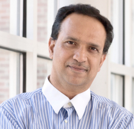
Faculty
PhD Students
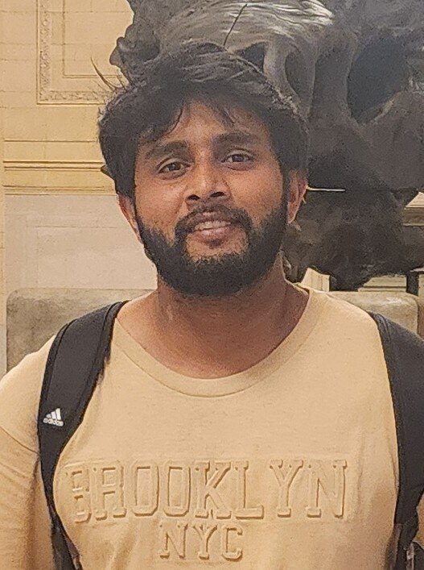
Gershom Seneviratne
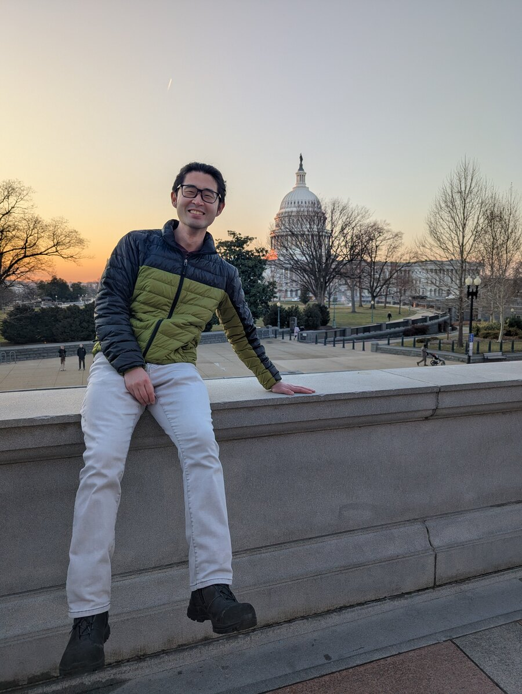
Jianyu (Jim) An
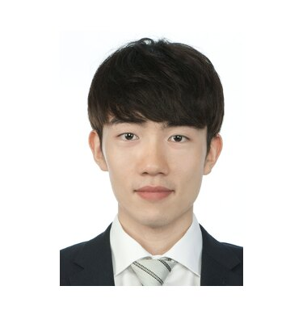
Dongki Jung
Rocktim Jyoti Das
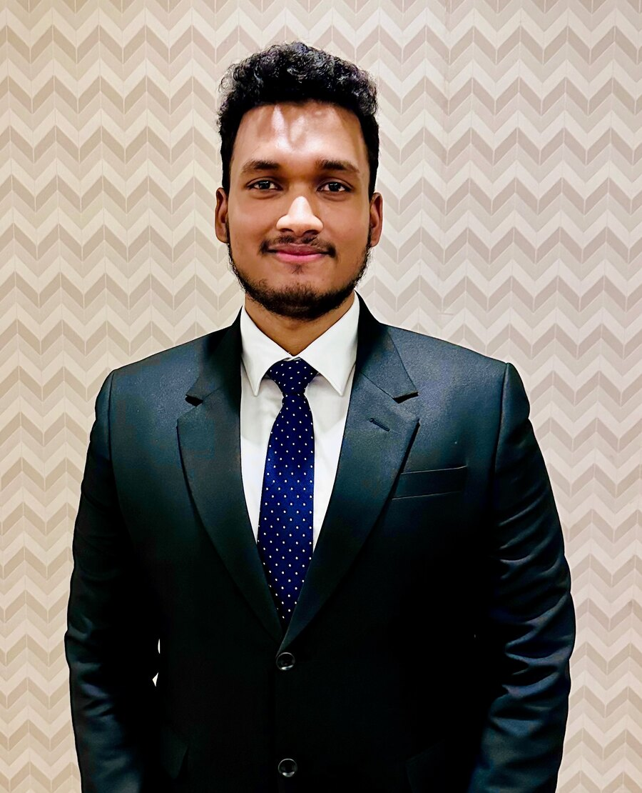
Yohan Abeysinghe
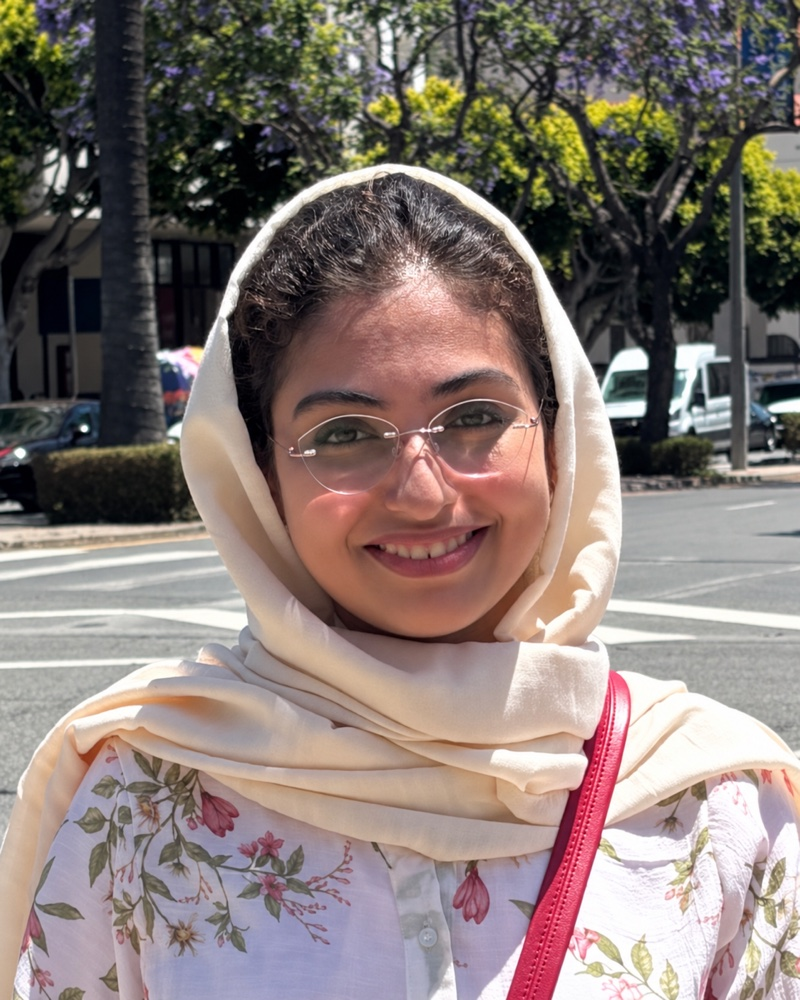
Fatemeh Alvankarian
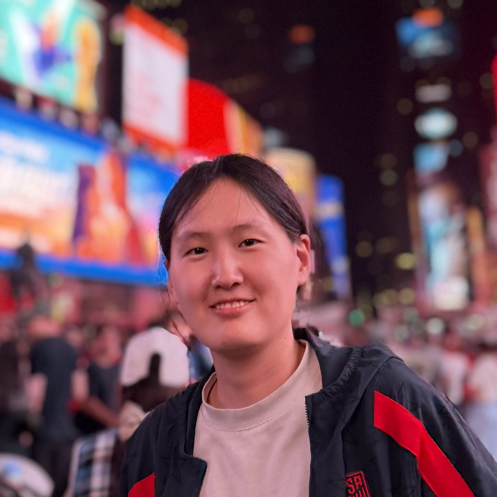
Hyunjin Kim
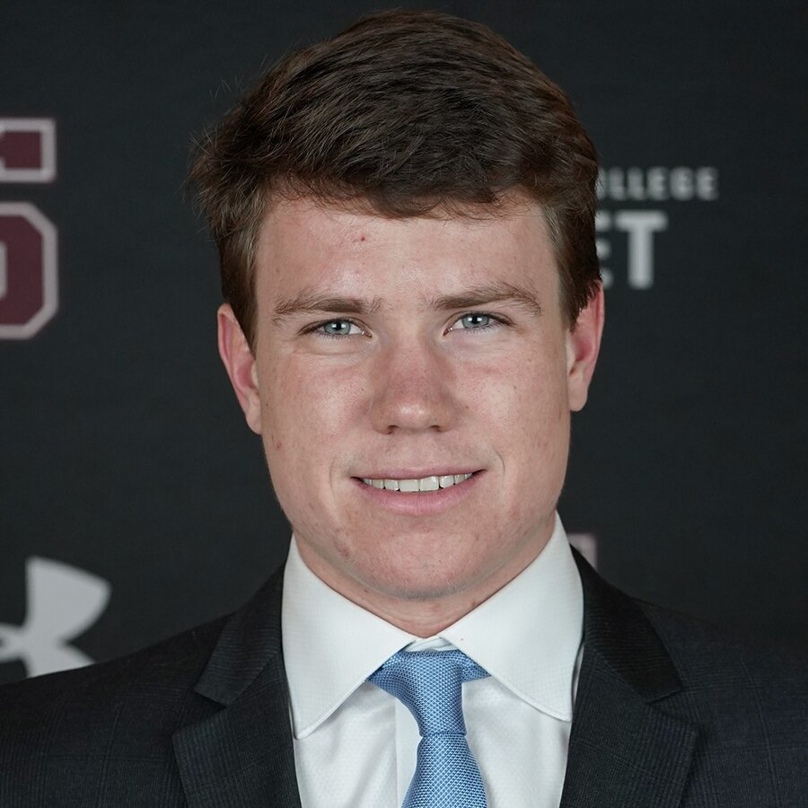
Owen Hoffman
Juan Esteban Carlier Blanco
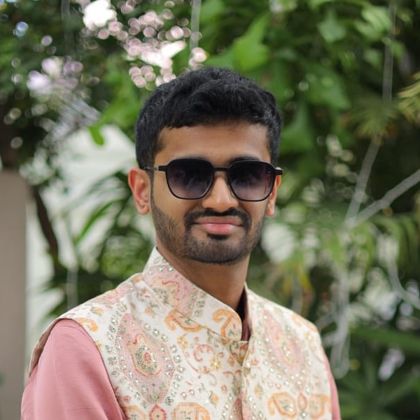
Shrey Patel
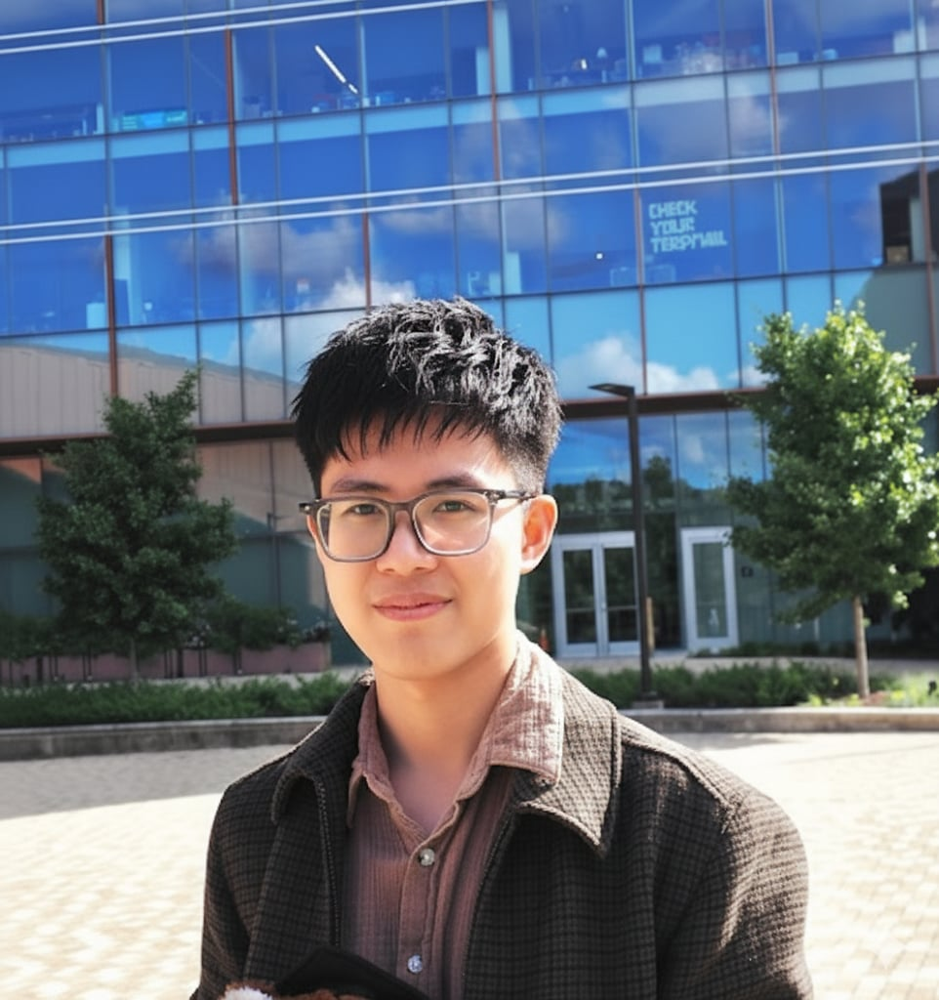
Anh N. Nhu
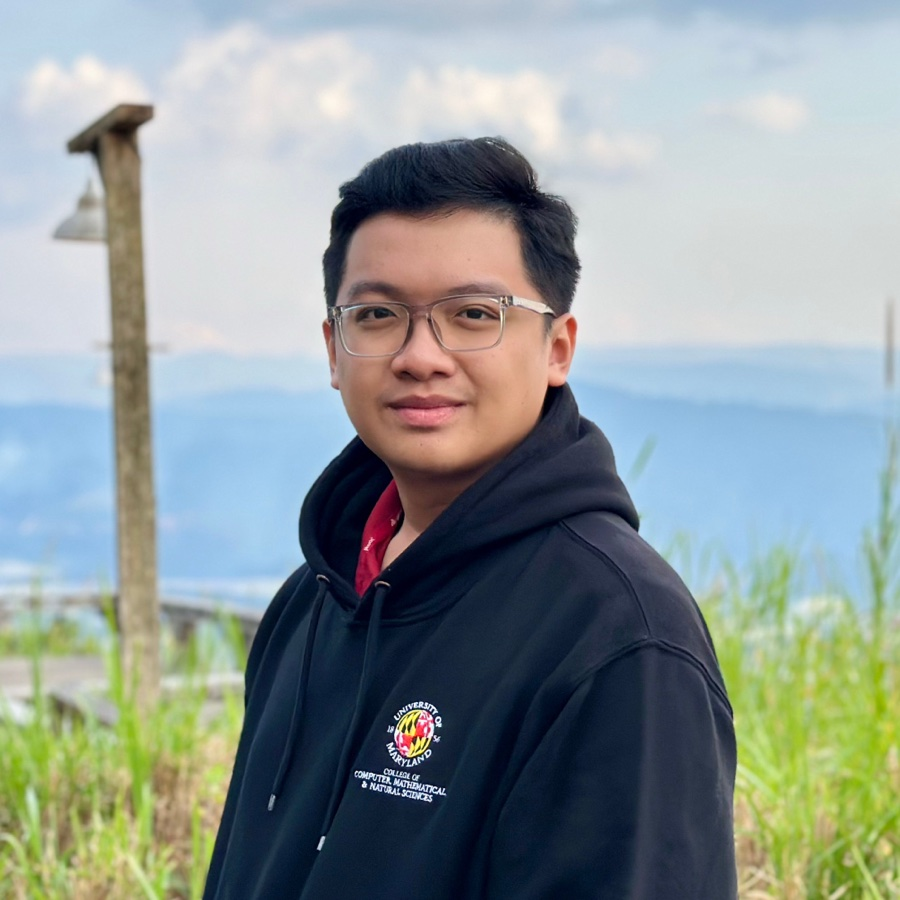
Phuc Nguyen Duc Anh
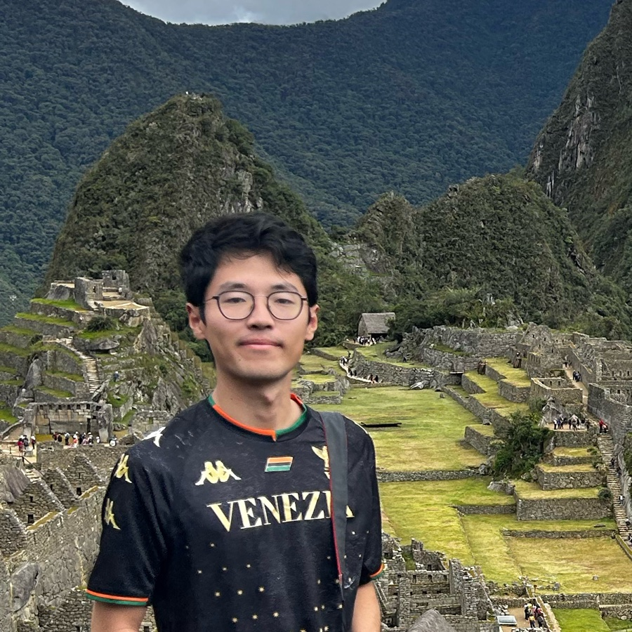
Xiyi Chen
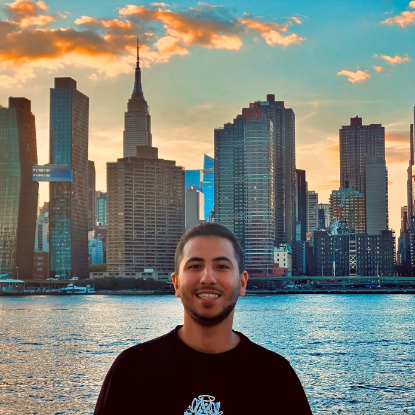
Hamidreza Yaghoubi
Alumni
PhD Alumni
- Vishnu Sashank DorbalaPh.D. Summer 2026First appointment: LG Research
- Mohamed ElnoorPh.D. Summer 2026First appointment: Amazon Robotics
- Ruiqi XianPh.D. Spring 2026First appointment: Motional Inc.
- Jaehoon ChoiPh.D. Spring 2026First appointment: Genesis AI
- Jing LiangPh.D. Fall 2025First appointment: Postdoc, Stanford University
- James MullenPh.D. Fall 2025First appointment: Apple Research
- Xijun WangPh.D. Summer 2025First appointment: Amazon
- Senthil Hariharan ArulPh.D. Summer 2025First appointment: A startup
- Tianrui GuanPh.D. Summer 2025First appointment: Waymo
- Sanghyun SonPh.D. Summer 2025First appointment: Genesis AI
- Laura Yu ZhengPh.D. Summer 2025First appointment: Waymo
- Pooja GuhanPh.D. Summer 2025First appointment: Dolby
- Kasun WeerakoonPh.D. Spring 2025First appointment: A startupNow: Robotics Autonomy Lead, AlphaZ Inc.
- Niall WilliamsPh.D. Winter 2024First appointment: Faculty Fellow, NYU Tandon School of EngineeringNow: Assistant Professor, Barnard College, Columbia University
- Yi-Ling QiaoPh.D. Summer 2024First appointment: Jump TradingNow: Co-founder, Genesis AI
- Adarsh Jagan SathyamoorthyPh.D. Spring 2024First appointment: A startup
- Liang HePh.D. Fall 2023First appointment: A startup
- Biao JiaPh.D. Fall 2023First appointment: Robotics industry
- Qingyang TanPh.D. Summer 2023First appointment: Meta
- Rohan ChandraPh.D. Spring 2022First appointment: Postdoc, UT AustinNow: Assistant Professor, University of Virginia
- Jaesung ParkPh.D. Spring 2020First appointment: Cupix, South Korea
- Zherong PanPh.D. Fall 2019First appointment: Postdoc, UIUC
- Andrew BestPh.D. December 2018First appointment: Toyota Research Institute
- Sahil NarangPh.D. December 2018First appointment: General Motors / Cruise
- Chonhyon ParkPh.D. Fall 2016First appointment: Zoox Inc.
- Sean CurtisPh.D. Spring 2014First appointment: Senior Manager, Boeing R&D
- Jia PanPh.D. Fall 2013First appointment: Postdoc, UC Berkeley, then faculty at Hong Kong University
- Jamie SnapePh.D. Fall 2012First appointment: Kitware
- Stephen GuyPh.D. Summer 2012First appointment: Assistant Professor, University of Minnesota
Postdoc Alumni
- Amrit Singh BediFirst appointment: Assistant Professor, University of Central Florida
- Aniket BeraFirst appointment: Associate Professor, Purdue University
- Nare KarapetyanFirst appointment: Assistant Scientist, Woods Hole Oceanographic Institution
- Young KimFirst appointment: Assistant Professor, Ewha Womans University, South Korea
- Daeun SongFirst appointment: Assistant Professor, Ewha Womans University, South Korea
- Jur van den BergFirst appointment: Assistant Professor, University of UtahNow: Principal Software Engineer, Waabi
For the full list, see GAMMA.